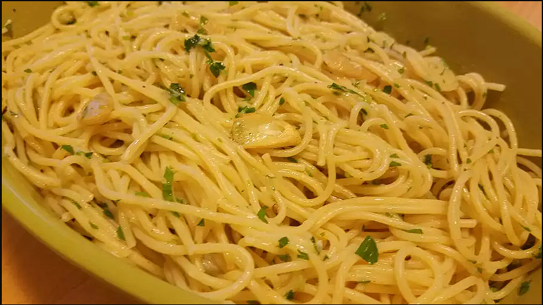

Spaghetti

Description
No two aglio e olio recipes are alike, but this one is pretty true to the classic method. The key is slowly
toasting the garlic slices to a perfect golden brown in the olive oil. If it's too light, you don't get the full
flavor and if it's too dark it gets bitter. My advice? Do it perfectly.
Ingredients
- 1 pound uncooked spaghetti
- ½ cup olive oil
- 6 cloves garlic, thinly sliced
- ¼ teaspoon red pepper flakes, or to taste
- salt and freshly ground black pepper to taste
- ¼ cup chopped fresh Italian parsley
- 1 cup finely grated Parmigiano-Reggiano cheese
Steps
- Bring a large pot of lightly salted water to a boil.
- While the pasta is cooking, combine olive oil and garlic in a cold skillet.
- Stir red pepper flakes, salt, and black pepper into pasta.
- Serve pasta topped with the remaining Parmigiano-Reggiano cheese.